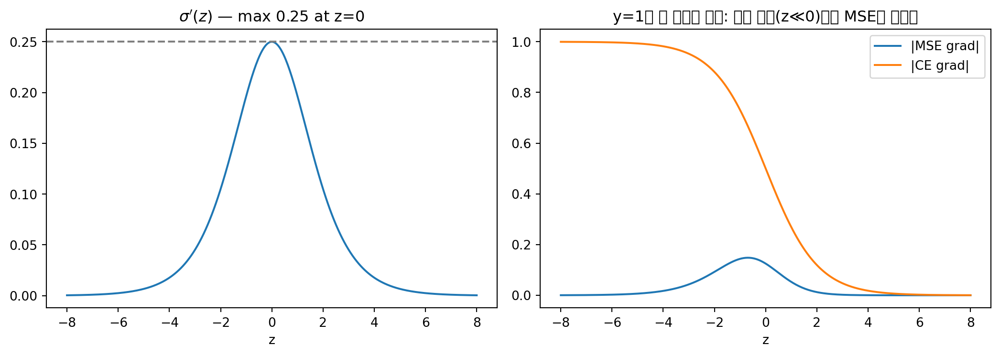

10차원 출력에 각각 시그모이드를 걸면 각 차원은 \([0,1]\) 값을 갖지만 합이 1이 아니다. 즉 확률분포가 아니라 “정규화되지 않은 확률처럼 보이는 것”이다. 지수를 취해 정규화하면 softmax가 된다.
3.1 Softmax는 정규화 그 이상이다
L1 정규화와 비교하면 본질이 드러난다 (수치는 직접 계산으로 검증한 값):
입력
L1 정규화
Softmax
\([1, 2]\)
\([0.333, 0.667]\)
\([0.269, 0.731]\)
\([10, 20]\)
\([0.333, 0.667]\)
\([0.0000454, 0.99995]\)
L1 정규화는 비율만 보존한다 — \([1,2]\)와 \([10,20]\)의 결과가 같다.
Softmax는 크기에 민감(magnitude sensitive) 하다 — 절대적 격차가 클수록 max를 1에 가깝게 증폭한다.
즉 softmax는 max를 부드럽게(soft) 취하는 연산이다: 결정적(deterministic) argmax가 아니라, 격차를 증폭하되 미분 가능한 형태로 유지한다.
실용적 이점: 증폭된 확률 격차는 증폭된 기울기로 이어져 학습을 쉽게 만든다.
Tip무선통신 관점: Soft Decision vs Hard Decision
softmax vs argmax의 관계는 수신기의 연판정(soft decision) vs 경판정(hard decision) 관계와 정확히 같다. argmax는 심볼을 즉시 확정하는 경판정으로 정보(신뢰도)를 버리지만, softmax는 LLR처럼 각 후보의 신뢰도를 보존하는 연판정이다. 채널 디코더에 LLR을 넘겨야 성능이 좋아지듯, 역전파에는 미분 가능한 softmax가 필요하다.
4 Gumbel Softmax: argmax를 미분 가능하게
4.1 동기: 두 네트워크의 종단간(end-to-end) 연결
신경망 A의 이산적 출력(softmax + argmax)을 신경망 B의 입력으로 연결하고 싶다고 하자.
대표적 응용이 로보틱스 파운데이션 모델이다: 네트워크 A는 고수준 행동(“문으로 가라”, “냉장고로 가라”)을 결정하고, 네트워크 B는 세밀한(fine-grained) 행동(문손잡이를 잡을 수 있는 적절한 거리 유지, 손잡이 돌리기, 당기기)을 생성한다. 전체를 하나의 모델로 입력→출력 end-to-end 학습하려면 중간의 모든 연산이 미분 가능해야 역전파가 통과한다.
즉, 결정적이던 argmax가 확률변수의 샘플링으로 재해석되고, 그 샘플링 과정을 softmax 식(위의 \(y_i\))으로 연속화하면 전체가 미분 가능해진다. 이렇게 미분 불가능한 것을 미분 가능하게 만드는 기법을 reparameterization trick이라 하고, Gumbel 분포를 쓰는 이 특수한 경우를 Gumbel-Max trick이라 한다.
4.4 응용
두 네트워크를 cascade로 연결한 단일 모델의 end-to-end 학습
VAE(Variational Autoencoder) 의 이산 잠재변수(latent variable) 제어 — VAE는 현대 생성 AI(GAN도 VAE 구조에 기반)의 토대이며, 2017년 제안(Jang et al., Maddison et al., ICLR 2017) 당시보다 요즘 VLA(Vision-Language-Action) 등 파운데이션 모델에서 더 널리 쓰인다.
Tip무선통신 관점: 학습 가능한 통신 시스템의 변조기
오토인코더 기반 통신 시스템(end-to-end learned communication)에서 송신기의 심볼 매핑(constellation mapping)은 이산 선택이라 미분 불가다. 송수신기를 하나의 신경망으로 묶어 BER을 직접 최소화하려면 이 이산 선택을 미분 가능하게 완화해야 하는데, 그때 쓰는 표준 도구가 바로 Gumbel Softmax다. 또한 reparameterization trick은 CSI 피드백 압축(CsiNet 계열)의 양자화(quantization) 층을 학습 가능하게 만들 때도 같은 역할을 한다.
5 활성화 함수 (Activation Functions)
5.1 후보들
함수
수식
치역
특징
Logistic Sigmoid
\(\sigma(z)\)
\((0,1)\)
매끄럽고 무한히 미분 가능, 그러나 \(\sigma' \le 0.25\)로 기울기 소실 심각
Hyperbolic Tangent
\(\tanh(z)\)
\((-1,1)\)
시그모이드와 유사하나 곡률이 다름; 응용에 따라 더 나은 정확도 — 둘 사이 선택은 본질적 우위가 아니라 응용/실험에 의해 결정
ReLU
\(\max(0, z)\)
\([0,\infty)\)
현대 딥러닝의 표준; 기울기 소실 완화, 파국적 망각 완화에도 기여
5.2 ReLU에 대한 첫인상과 반전
ReLU는 양수 구간에서 그냥 선형이고 음수는 0으로 죽이는, “허무할 만큼 단순한” 함수다. 단일 층에서는 입출력 간 비선형성을 거의 주지 못하는 것처럼 보인다. 그러나 여러 층을 쌓으면 입출력 간 비선형성이 지수적으로 복잡해진다. 단순한 활성화라도 깊이가 충분하면 충분한 표현력을 확보하며, 동시에 기울기 소실이 적다는 결정적 이점 때문에 시그모이드/tanh보다 선호된다.
5.3 ReLU의 일반화와 변형들
음수 입력 정보가 중요한 응용도 있다. vanilla ReLU는 음수를 전부 죽이므로, 이를 일반화한 공식:
\[
h_i = \max(0, z_i) + \alpha_i \min(0, z_i)
\]
\(\alpha_i\)
결과
비고
\(0\)
ReLU
음수 완전 차단
\(1\)
선형 유닛
활성화가 사라짐 (비선형성 없음)
\(-1\)
절댓값 정류 (Absolute value rectification): \(h_i = |z_i|\)
음수를 양수로 접음
\(0.01\) (작은 양수)
Leaky ReLU
음수 정보를 “조금 누설(leak)”시킴
학습 가능 파라미터
PReLU (Parametric ReLU)
\(\alpha\) 자체를 데이터로 학습 — “배울 수 있으면 다 배우자”는 철학
Maxout도 같은 정신의 변형(여러 선형 함수의 max를 취함)이다.
5.4 직관적 정당화: 공간 접기(folding)
절댓값 정류 \(h = |z|\)를 쓰면 입력 공간이 반으로 접힌다. 접힌 공간에서 단순한(거의 선형인) 분류 경계를 학습한 뒤 펼치면, 원래 공간에서는 훨씬 복잡한 경계가 된다.
1번 접기 → 경계 복잡도 2배 효과
\(n\)번 접기(= \(n\)개 은닉층 cascade) → 지수적으로 복잡한 분류 경계
즉, 각 층의 활성화가 단순해도 깊이가 복잡도를 지수적으로 증폭하므로, 심층 신경망은 매우 복잡한 분류 경계를 인코딩할 수 있다. 이것이 “단순한 활성화 + 깊은 구조”의 정당화다.
6 기울기 소실 (Gradient Vanishing)
6.1 메커니즘 (인과 사슬)
심층 신경망의 역전파는 연쇄 법칙에 의해 각 층의 국소 기울기를 곱하는 것이다.
국소 기울기의 크기가 \([0,1]\) 구간(특히 1보다 충분히 작은 값)에 있으면, 층을 거칠 때마다 기울기 크기가 기하급수적으로 감소한다.
출력층에서의 기울기 크기가 충분히 커도, 입력층에 도달할 즈음에는 거의 0이 된다.
기울기 크기가 0에 가까우면 \(w \leftarrow w - \eta \nabla_w L\)에서 갱신량이 0에 가깝다.
따라서 입력층 근처 파라미터는 초기화 상태에서 거의 변하지 않고, 학습이 아무리 진행돼도 그 층은 배우지 못한다 → 학습 효율이 극도로 낮아져, 반복 횟수를 크게 늘리거나 기울기를 증폭하는 메커니즘이 필요한데, 증폭은 기울기의 노이즈까지 증폭한다.
6.2 활성화 함수별 영향
활성화
국소 기울기
결과
Sigmoid
최대 \(0.25\) (\(z=0\)에서), 포화 영역에서 \(\approx 0\)
\(0.25\) 이하를 반복해서 곱함 → 소실 심각
ReLU
양수 구간에서 정확히 \(1\)
\(1 \times 1 \times \cdots\) → 출력층의 기울기 크기가 입력층까지 살아서 전달
이것이 깊은 네트워크에서 ReLU를 선호하는 가장 큰 이유다.
Tip무선통신 관점: 다중 홉 릴레이의 SNR 열화
각 층의 국소 기울기 곱셈은 multi-hop relay에서 홉마다 곱해지는 채널 이득과 같다. 각 홉의 이득이 1보다 작으면(감쇠) 홉 수가 늘수록 수신 신호는 지수적으로 약해진다 — amplify-and-forward 릴레이가 신호와 함께 잡음도 증폭하는 것이, 기울기 부스팅이 기울기 노이즈도 증폭하는 것과 정확히 대응된다. ReLU는 이득이 정확히 1인 regenerative(decode-and-forward) 릴레이처럼 신호 크기를 보존한다.
7 파국적 망각 (Catastrophic Forgetting)
7.1 정의
이전에 학습한 태스크(태스크 A)에 대한 지식이, 현재 태스크(태스크 B)와 관련된 정보가 통합되면서 급격히(abruptly) 소실되는 경향 (McCloskey and Cohen, 1989)
7.2 미니배치 학습에서의 발생 메커니즘
고정된 크기의 네트워크를 미니배치 단위로 학습한다: 배치 1로 파라미터 갱신 → 배치 2로 갱신 → ⋯
배치 1 학습 직후에는 배치 1에 대한 손실이 거의 0이다 (잘 학습됨).
그러나 이후 배치들의 기울기가 같은 파라미터 집합을 계속 덮어쓴다. 어떤 보호 장치(barrier/protector)도 없다.
특정 배치와 무관한 파라미터라도 기울기가 정확히 0이 아닌 한(예: \(10^{-6}\)), 수백만 번 누적되면 유의미하게 변한다.
에폭이 끝나갈 무렵 배치 1로 추론해 보면 손실이 다시 올라가 있다 — 초기 배치의 정보가 망각된 것이다. 5천 개 미니배치라면 에폭 초반 배치의 정보는 마지막 미니배치 시점에 거의 잊힌다.
7.3 왜 “파국적”인가 — 두 가지 원인
원인
설명
보호 장치 부재
고정된 파라미터 집합을 모든 데이터가 공유하며 덮어씀; “이 파라미터는 건드리지 마라”는 메커니즘이 없음
용량 부족
정보량 > 네트워크 용량이면 새 정보를 넣기 위해 옛 정보를 지울 수밖에 없음. 2MB 데이터를 500KB 저장장치에 넣으려면 덮어쓰기(override)뿐 — 마지막에 넣은 것만 남는다
7.4 다중 에폭 학습과의 관계
“왜 여러 에폭을 도는가?”에 대한 확정된 단일 이론(winning theory)은 아직 없다. 유력한 가설 중 하나가 파국적 망각이다: 같은 데이터를 여러 번 복습(review)하면 망각이 완화(mitigated)되기 때문이다. 실무적으로는 다중 에폭이 더 나은 모델을 주는 것이 경험적으로 알려져 있다.
7.5 파생 개념
Continual Learning (연속 학습): 데이터를 한 번만 보고 스트림으로 흘려보내는(복습 불가) 시나리오. 망각이 가장 심각하게 드러나는 환경이며, 머신러닝의 한 하위 분야다. 모델이 작을수록(용량이 부족할수록) 더 심각하다.
대형 모델 시대의 양상: LLM/VLA처럼 파라미터가 막대한 모델은 정보가 여유 파라미터 공간에 “스며들” 수 있어 망각이 상대적으로 덜 심각하다. 즉 망각 문제는 대형 모델 영역에서 다른 양상을 띤다.
Tip무선통신 관점: 적응 필터의 시변 채널 추적
LMS/RLS 적응 등화기는 시변 채널을 추적하기 위해 forgetting factor\(\lambda\)로 과거 정보를 의도적으로 잊는다. 신경망의 파국적 망각은 이 forgetting factor를 제어할 수 없이 데이터 순서가 강제하는 상황과 같다. 또한 “정보량 > 용량이면 덮어쓸 수밖에 없다”는 논리는 채널 용량을 초과하는 전송률에서는 오류 없는 전송이 불가능하다는 Shannon 정리의 저장 버전으로 읽을 수 있다.
8 네트워크 설계의 두 가지 질문
8.1 Q1. 얼마나 깊어야 하는가?
다중 숫자 전사(multi-digit transcription) 류의 과제에서 층 수를 늘리면 정확도가 92% → 95% → 96%처럼 오르지만 증가 폭이 점점 줄어든다. 이 현상의 이름:
Note수확 체감 (Diminishing Returns)
투입(층 수, 파라미터 수)을 늘릴수록 한계 이득이 감소하는 현상. 자연계 대부분의 현상이 이 패턴을 따른다. (한국어로 한계효용 체감에 해당)
8.2 Q2. 파라미터는 몇 개여야 하는가?
파라미터 수를 늘리면 수확 체감을 넘어 성능이 오히려 하락하기도 하고, 일관된 추세 없이 오르내리기도 한다. 각각의 원인:
현상
원인
성능 하락
데이터 수 대비 파라미터가 과도하면 과적합(overfitting) — 훈련 데이터에는 맞지만 일반화 실패
불규칙한 등락
테스트셋도 세계(world)의 표본일 뿐이라 세계를 완벽히 대표하지 못함 → 국소적 노이즈에 의한 ups and downs는 자연스러운 현상
8.3 결론
“몇 층, 몇 개 파라미터가 최적인가”에 대한 일반 해답은 없다. 응용, 데이터셋, 아키텍처에 모두 의존한다(it all depends). 이 비자명성이 머신러닝 엔지니어가 필요한 이유다.
9 역전파의 수렴성 (Convergence of Backpropagation)
9.1 볼록에서 비볼록으로
모델
해 공간(solution space)
수렴 보장
단층 퍼셉트론 + 로지스틱 회귀 손실
볼록(convex)
경사하강법이 전역 최솟값 도달 보장
퍼셉트론 2층 이상 (XOR 해결 가능 시점부터)
비볼록(non-convex)
경사하강법이 국소 최솟값에 갇힐 수 있음
9.2 해 공간의 결정 요인
해 공간은 손실 함수 정의 × 데이터셋의 조합으로 결정된다. 손실을 로지스틱 회귀에서 CE로 바꾸거나, 데이터가 100개에서 1000개로 바뀌면 해 공간 자체가 달라진다.
Warning시험 트랩: “해가 여러 개 = 비볼록”이 아니다
비볼록성의 근거는 “다층 합성으로 인해 목적함수가 볼록성을 잃는다”는 구조적 사실이지, 해가 여러 개라는 관찰이 아니다(볼록 함수도 최솟값 집합이 여러 점일 수 있다). 또한 고차원 해 공간 전체를 탐색하는 것은 사실상 불가능하므로, 경사하강법은 지역 정보만으로 움직이다 국소 최솟값에 정착한다.
9.3 결과와 역사
은닉 유닛 수, 층 수의 선택은 하이퍼파라미터 — 수렴 보장이 없으므로 좋은 국소해를 찾는 데 사람의 개입이 필요하다.
수렴 보장 부재 때문에 신경망은 10년 이상 SVM에 밀렸다: SVM은 볼록 최적화로 수렴이 보장되고 일반화 이론이 탄탄하며(커널 트릭으로 더 강력해짐) 다중 에폭 학습도 불필요했다. 그러나 SVM은 본질적으로 (커널을 써도) 용량이 제한된 얕은 모델이고, 고용량 신경망이 2012년 AlexNet으로 SVM을 꺾었다.
목적함수가 비볼록임을 알면서도 볼록 최적화 도구(경사 기반 방법)를 쓰는 이유: 수학적으로 보장된 더 나은 대안이 없기 때문. 비볼록 공간에서도 좋은 국소 최솟값을 찾는 가장 신뢰할 만한 도구가 여전히 볼록 최적화의 기법들이다.
Note여담이지만 기억에 남는 비유
좋은 국소해를 찾는 문제는 인생의 많은 결정(예: 배우자 찾기)과 닮았다 — 전체 해 공간을 탐색하는 것은 NP-hard이므로, 제약된 탐색 공간(내 도시, 내 학교) 안에서 좋은 국소 최솟값을 찾는다. 그리고 탐색 공간을 넓히면 더 나은 국소해가 거의 확실히 존재한다 — 지금의 해가 전역 최적일 확률은 매우 낮다.
어떤 정규화 파라미터 \(\lambda^* > 0\)가 존재하여, hard-constraint 최적화는 soft-constraint 최적화와 동치다 — 이것이 라그랑주 승수법이다. 차이점: hard는 해가 공(ball) 안에 있음을 보장하지만, soft는 보장 없이 “크기가 과도하지 않도록 유도”한다. soft 형식은 제약 없는 최적화라 훨씬 풀기 쉽다.
“페널티(penalty)”라는 이름은 최적화가 끝났을 때 모델이 큰 크기(magnitude)를 갖지 않도록 벌점을 부과한다는 의미다. 단순한 모델을 선호하는 이 원칙은 Occam’s razor이며, 13차 다항식 과적합 예시에서 본 것과 같은 맥락이다 — 모든 것이 연결되어 있다.
10.3 L1, L0 페널티와 희소성(Sparsity)
희소 벡터(sparse vector): 성분 대부분이 0인 벡터 (vs. dense vector: 거의 모든 차원에 0이 아닌 값). “얼마나 0이 많아야 희소인가”는 아름다운 꽃/아닌 꽃의 구분처럼 다소 주관적이다.
페널티
효과
베이지안 해석
최적화 난이도
\(\ell_2\): \(\|\theta\|_2^2\)
크기 억제 (weight decay)
Gaussian prior를 가진 MAP
쉬움 (미분 가능)
\(\ell_1\): \(\|\theta\|_1\)
희소성을 유도(encourage) — 보장은 아님
Laplace prior를 가진 MAP
NP-hard지만 근사해 존재 → 경사 기반 도구로 풀 수 있음
\(\ell_0\): 0 아닌 성분 개수
희소성을 강제(force) — 더 희소한 해
—
NP-hard, 조합 최적화 — 사실상 직접 최적화 불가
Warning시험 트랩: encourage vs force
\(\ell_1\)은 희소성을 유도할 뿐 보장하지 않는다. \(\ell_0\)은 희소성을 강제하지만 조합 최적화라 풀기 어렵다. \(\ell_1\)이 실무 표준인 이유는 \(\ell_0\)의 다루기 쉬운(tractable) 근사이기 때문이다. (정의 뒤집힘 주의 — 실수 패턴 C)
즉 베이지안 관점에서 정규화 항은 prior, 손실 항은 likelihood다. 정규화 항과 함께 최적화한 해는 MAP 해가 된다.
Tip무선통신 관점: MMSE vs 희소 채널 추정 (복습 겸 통합)
\(\ell_2\) 정규화 = Gaussian prior MAP ↔︎ MMSE 채널 추정 (채널 계수에 Gaussian prior; LS 추정의 잡음 증폭을 prior가 억제)
\(\ell_1\) 정규화 = Laplace prior MAP ↔︎ mmWave/Massive MIMO의 희소 채널 추정 (LASSO/OMP; 지연-각도 영역에서 경로 수가 적다는 prior)
\(\ell_0\) ↔︎ 정확한 sparse support 복원 문제 — compressed sensing에서도 \(\ell_0\)는 NP-hard라 \(\ell_1\) 볼록 완화(Basis Pursuit)를 쓰는 것과 정확히 같은 논리
데이터(파일럿)가 부족할수록 prior(정규화)의 역할이 커진다는 점도 동일하다.
11 딥러닝을 위한 정규화 기법
전통적 정규화는 손으로 설계한(hand-crafted) prior였지만, end-to-end 철학의 딥러닝에서는 데이터 주도(data-driven) 방식의 정규화를 선호한다.
11.1 데이터셋 증강 (Dataset Augmentation)
정규화의 근본 동기는 훈련 데이터의 부족과 싸우는 것이다. 가장 쉽지만 비싼 해법은 “데이터를 더 모으는 것” — 예산이 없다면, 의미(semantic)는 유지하면서 표현만 바꾼 가짜 신규 데이터를 만든다.
이미지: 아핀 변형(affine distortion), 노이즈 주입, 축별 변형(deformation), 뒤집기(flip), 평행이동, 색상 변화 — 픽셀은 달라지지만 같은 클래스
텍스트: 단어 변형 — “trash can” ↔︎ “recycle bin”, “chair” ↔︎ “sofa”처럼 유의어/변형 표현으로 문장 다양성 확보
11.2 적대적 예제 (Adversarial Examples)
신경망은 훈련 데이터에 과적합된 해를 갖기 쉬워서, 사람 눈에 보이지 않는 미세한 노이즈로 출력을 조종할 수 있다.
고전 사례: panda 이미지(신뢰도 57.7%) + 미세 노이즈 → gibbon으로 99.3% 신뢰도 오분류. 노이즈 패턴이 다른 의미(semantic)에 대응되는 내부 통계/반응을 발화시키기 때문.
안전 직결 사례: 정지(STOP) 표지판에 스티커 몇 장을 붙이면 자율주행차의 비전 모델이 속도 제한 표지로 오인 → 정지하지 않음. 초기 신경망 기반 자율주행에서 실제로 시연된 공격.
방어이자 정규화로서의 활용 — 두 가지 방법:
방법
내용
Method 1: 입력에 노이즈
적대적 예제를 만들어 올바른 라벨(“이것도 panda다”)로 다시 학습 → 모델이 적대적 섭동에 강건해짐 (adversarial training; 주목적은 보안이지만 일반적 정규화 효과도 있음)
Method 2: 출력 타깃에 노이즈 = Label Smoothing
one-hot 타깃을 부드럽게: \(1 \to 1-\epsilon\), \(\;0 \to \dfrac{\epsilon}{k-1}\) (\(\epsilon\): 작은 값, \(k\): 클래스 수). “98% panda, 2% gibbon”처럼 과신을 막아 덜 과적합된 해를 유도 (Szegedy et al., CVPR 2016)
적대적 섭동은 수신기의 결정 경계(decision boundary)를 알고 있는 공격자가 최소 전력으로 심볼을 경계 너머로 밀어내는 표적 재밍(smart jamming) 과 같다 — 광대역 잡음(전력 낭비)이 아니라 경계에 수직인 방향으로만 미는 것이 효율적이라는 점까지 동일하다. 그리고 label smoothing은 LLR 클리핑처럼 과신(overconfidence)을 제한해 강건성을 얻는 기법에 대응한다.
11.3 남은 데이터 주도 정규화 기법 (다음 노트에서 상세히)
Semi-supervised learning(비라벨 데이터 = 정규화 정보), Multi-task learning, Early stopping, Parameter sharing/tying(\(\|B-A\|_2^2\) 최소화), Bagging/Ensemble, Dropout, Tangent propagation. 이후 최적화 방법론(Momentum, 초기화, 적응적 학습률, BatchNorm 등)으로 이어진다.
12 핵심 비교표 모음
12.1 손실 함수
MSE
MAE
CE
최적해의 의미
\(f^*(x)=\mathbb{E}[y\mid x]\) (조건부 평균)
조건부 중앙값
Bernoulli/Multinoulli MLE
기울기의 \(\sigma'\) 인자
있음 → 소실 악화
—
없음 → 소실 완화
주 용도
회귀
단순 문제의 강건한 회귀
분류의 표준
12.2 무선통신 대응 총괄
딥러닝 개념
무선통신 대응
softmax / argmax
연판정(LLR) / 경판정
Gumbel softmax
학습형 송수신기의 이산 선택(성상 매핑, 양자화) 미분가능화
기울기 소실
다중 홉 릴레이의 누적 감쇠 (ReLU = 이득 1의 재생 릴레이)
파국적 망각
적응 필터의 forgetting factor 폭주 / 용량 초과 시 덮어쓰기
\(\ell_2\) / \(\ell_1\) / \(\ell_0\)
MMSE(Gaussian prior) / LASSO·OMP 희소 채널 추정 / NP-hard support 복원
적대적 예제
결정 경계 표적 최소전력 재밍
Label smoothing
LLR 클리핑 (과신 제한)
13 1분 치트시트
CE 기울기 \(=(\sigma(z)-y)x\), MSE 기울기 \(=(\sigma(z)-y)\sigma'(z)x\). \(\sigma'_{\max}=0.25\).
import numpy as npimport matplotlib.pyplot as pltz = np.linspace(-8, 8, 400)sig =1/ (1+ np.exp(-z))y =1.0# 정답 라벨grad_mse = np.abs((sig - y) * sig * (1- sig)) # |∂L/∂z|, x=1 가정grad_ce = np.abs(sig - y)fig, ax = plt.subplots(1, 2, figsize=(11, 4))ax[0].plot(z, sig * (1- sig))ax[0].axhline(0.25, ls='--', c='gray')ax[0].set_title(r"$\sigma'(z)$ — max 0.25 at z=0")ax[0].set_xlabel("z")ax[1].plot(z, grad_mse, label="|MSE grad|")ax[1].plot(z, grad_ce, label="|CE grad|")ax[1].set_title("y=1일 때 기울기 크기: 포화 영역(z≪0)에서 MSE는 죽는다")ax[1].set_xlabel("z"); ax[1].legend()plt.tight_layout(); plt.show()

14.2 Softmax vs L1 정규화의 크기 민감성
def softmax(x): e = np.exp(x - np.max(x))return e / e.sum()for v in ([1., 2.], [10., 20.]): v = np.array(v)print(f"input={v}, L1={v/v.sum()}, softmax={softmax(v)}")